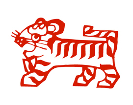

虎年出生的年份：1950年、1962年、1974年、1986年、1998年、2010年

2020年运势吉运
2020年庚子年，子水为生肖虎的“正印”星为其吉星并且得岁干庚金“偏官”去相生，构成了官印相生。2020年的生肖鼠在事业上多容易获得一些机遇，利于考试考核，利于职称提升，工作变动和调整等，利于福利待遇的提升，容易得到政策的倾斜和照顾。但以上吉利虽多，需要打一个折扣，因为生肖虎没法和太岁直接作用，故机遇不少，抓住不多。
2020年运势凶运
2020庚子年太岁为生肖虎的“白虎煞”为凶星，且还带了“吊客”，“天狗关”，“丧门”等凶星。故属虎人的小朋友就得注意，2020年不适合经常去找猫狗打闹，否则容易有抓伤，咬伤。其次2020太岁带的凶星也有家中老人或是亲友离开的信号，或是带了一些血光之灾的凶险，也不太利于婚姻运，容易犯孤独。
2020年财运运势
财运方面为吉利，2020年太岁子水为其“正印”星，和岁干构成了官印相生，利于物质运，利于待遇提升，容易在金融项目，五金类的项目或是水利项目，餐饮项目上获得收益，但前提都需要多去争取。
2020年事业官运
生肖虎事业官运方面，因生肖虎为寅木，而太岁子水“正印”星两者构成了官印相生，利升职运，利于考试考核，利于应聘求职，利于工作变动和调整。但生肖虎无法和太岁直接拉动，难以很好的去化太岁的吉利气场，所以机遇多，但不好把握。
2020年感情运势
生肖虎的人今年“偏官”星为岁干，为生肖虎女生的异性星，而男生异性星没出现。说明2020年属虎的女生感情上还会有一些机遇，但也需要自身多去争取，而男生的话感情上多被动，难有好的机遇。
2020年健康平安运势
生肖虎健康方面2020年根据太岁五行组合来看，到是不惧怕。但太岁带了诸多凶煞，我们就必须得去防范，需要防范各种损伤，不宜去一些阴暗潮湿的环境去冒险，还有呼吸系统可能不太理想。
2020年吉祥物
鼠年属虎和太岁为气势相生，得太岁之生，但力量较小。虽然太岁的组合导致了很多吉利的信号，但属虎人却是机遇很多，而难以很好的去把握，虽然也会有一些凶星干扰，但也是干扰不大。小心太岁凶煞丧门，吊客，白虎煞等所带来的一些灾害。